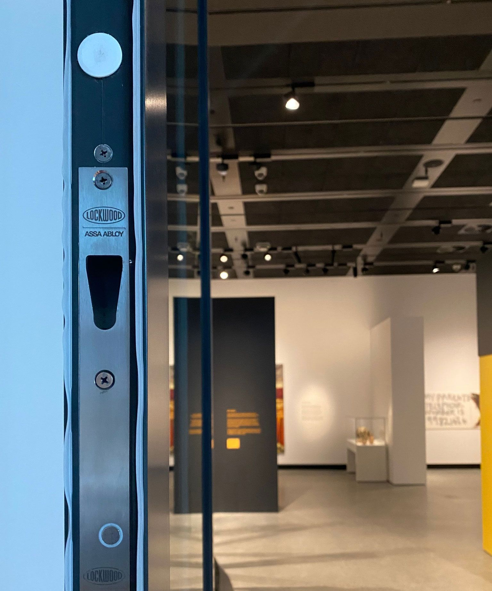

On this page
AT A GLANCE
Moving into a new home is an exciting milestone, but it also comes with important responsibilities—like ensuring your property is secure.
Moving into a new home is an exciting milestone, but it also comes with important responsibilities—like ensuring your property is secure. One often overlooked step in the process is changing your locks. While it may seem minor, it is crucial in protecting your family and belongings. In this blog, we’ll explore why changing your locks is vital, signs that it’s time for an upgrade, and how a professional residential locksmith can help secure your new home.
The Importance of Changing Locks in a New Home
When you move into a new property, you can never be sure how many copies of the keys exist or who might have access to them. Previous homeowners, tenants, or contractors could still have old keys, potentially compromising your security.
Beyond unknown keyholders, older locks might not provide the level of protection you need. Upgrading your locks eliminates potential risks and gives you peace of mind, knowing you’re the only one with access to your home.
Signs It’s Time to Replace Your Locks
Even if you’ve lived in your new home for a while, certain scenarios make changing your locks essential for maintaining safety. Here are a few key signs to look out for:
- Lost or Stolen Keys: Misplaced keys or suspected theft can leave your home vulnerable to unauthorised access.
- Outdated Locks: Old or worn-out locks can be easier to break, making them an attractive target for intruders.
- Visible Tampering: Scratches or damage around the keyhole may indicate attempted forced entry.
- New Roommates or Tenants: If you’re renting out part of your home or have a changing household, ensure previous occupants no longer have access.
- Divorce or Separation: Protect your privacy by replacing locks after major life changes involving shared spaces.
Identifying these warning signs early ensures you can take proactive steps to secure your property.
Types of Locks to Enhance Home Security
Choosing the right locks for your home is just as important as changing them. Modern lock options provide varying levels of security and convenience to suit your needs. Consider these popular choices:
- Smart Locks: Ideal for tech-savvy homeowners, smart locks offer keyless entry and advanced features like remote access.
- Keypad Locks: These locks are convenient for households with multiple residents, requiring only a code for entry.
- Double Cylinder Locks: These provide extra security and require a key for both sides of the door, deterring break-ins through glass panels.
- High-Security Locks: Designed with reinforced materials and advanced mechanisms, these locks are harder to pick or force open.
Upgrading your locks isn’t just about replacing them; it’s an opportunity to improve your overall home security.
Best Practices for Maintaining Home Security After a Lock Change
Changing your locks is just the first step. To keep your home secure long-term, follow these best practices:
- Inspect Locks Regularly: Check for signs of wear and tear, such as rust or difficulty turning the key.
- Limit Duplicate Keys: Only share keys with trusted individuals and avoid making unnecessary duplicates.
- Install Advanced Security Systems: For an added layer of protection, consider integrating smart locks with home security cameras or alarms.
- Educate Your Household: Ensure everyone in your home understands basic security measures, such as locking doors and safeguarding keys.
These proactive measures help you maintain the integrity of your locks and the overall security of your home.
Connect with Our Residential Locksmiths on the Gold Coast Today!
Changing the locks on your new house is a simple yet powerful way to protect your family and belongings. With the help of a professional residential locksmith on the Gold Coast, you can upgrade your home’s security and enjoy peace of mind. Contact our Gold Coast locksmith to discuss your needs and schedule a consultation! Take the first step towards a safer home—start with your locks.


